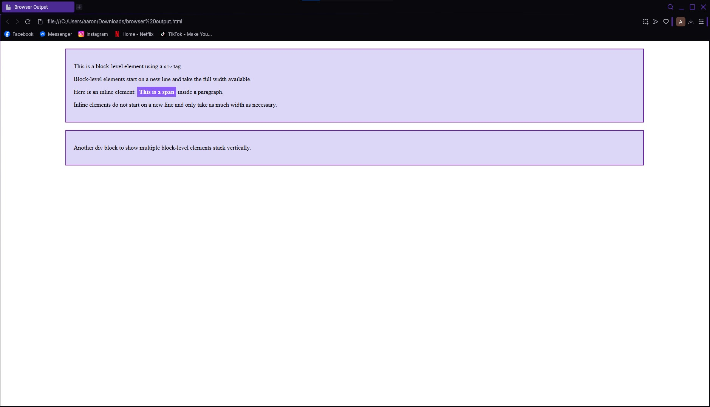
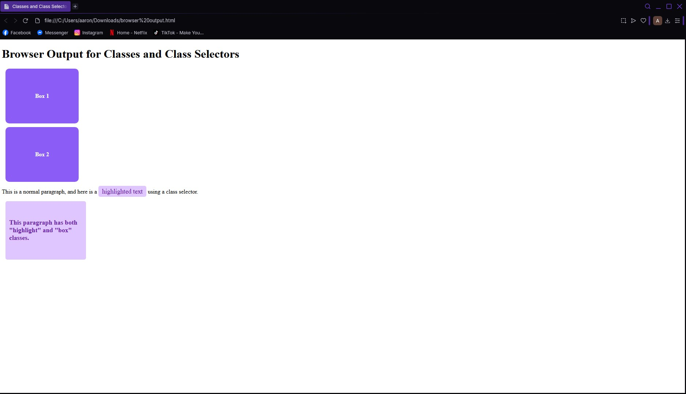
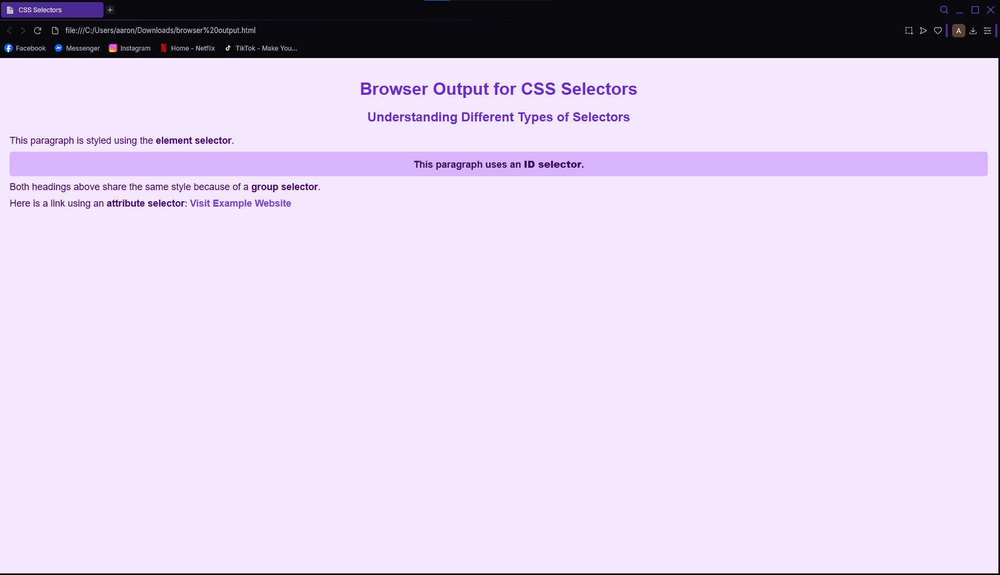
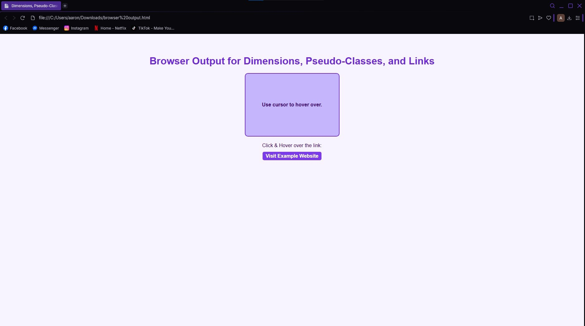

Welcome to Arkin's Website
Learn MorePersonal Space
Personal Details
I am Arkin, currently 14 years old whose birthday is December 4, 2010, Im a student who loves learning, creating, and adventuring. My favorites are eating, sleeping, and genuinely spending time out with my friends because they are the ones who make my life happy. I wouldn't be who I am if it wasn't for my friends they make my life enjoyable.
Circle of Friends (Mixue Ice Cream & Tea)
My friends are very important to me, they've seen every side of me. We've all been together since the 8th grade and we always do things together. My most memorable moment was them was everytime we all spend time together either in school or outside because if im with them im always happy and they make every moment memorable.
My Family
My biggest source of support and inspiration comes from my family. They help me grow as a person and teach me the importance of patience, kindness, and respect. My family always likes to travel and whenever there is a family event everybody is always laughing and having fun. Our most recent family gathering was in Cagayan where we went out to go island hopping the gathering was overall very fun because i got to spend time with my family before going back to school.
School Events
Buwan ng Wika
What is the most important thing I learned from the event?: The most important thing I learned was to appreciate and value our Filipino language and culture because it shows who we are as a country.
How can I apply what I learned in real-life situations?: I can use our national language more often and promote it when communicating with others, especially in school or public places.
Did I actively participate in the event? How?: Yes, I participated by joining the activities and wearing traditional Filipino attire to show my support for the event.
If I were to teach this topic/subject to a classmate, how would I explain it?: I would explain that Buwan ng Wika is about celebrating our language, identity, and pride as Filipinos through creative and cultural activities.
Why is it important to have an event (per subject)? Explain your answer.: It helps students connect lessons to real life, develop cultural appreciation, and strengthen their sense of national pride.
INTRAMS
What is the most important thing I learned from the event?: I learned the importance of teamwork, discipline, and sportsmanship whether we win or lose.
How can I apply what I learned in real-life situations?: I can apply it by cooperating with others in group work and being respectful even in competition.
Did I actively participate in the event? How?: Yes, I joined in Green Volleyball Men's Team and i was also cheering and helping organize our team during the games.Yes, I helped in setting up our class project which was the WINS Corner and helped to maintain our classrooms cleanliness.
If I were to teach this topic/subject to a classmate, how would I explain it?: I would explain that Intrams is about developing physical skills and unity among students through sports and friendly competition.
Why is it important to have an event (per subject)? Explain your answer.: It encourages teamwork, builds school spirit, and promotes physical health and discipline among students.
SCIENCE MONTH
What is the most important thing I learned from the event?: I learned that science helps us understand the world and create solutions for real-life problems.
How can I apply what I learned in real-life situations?: I can apply it by respecting our country’s heritage and staying informed about national issues.
Did I actively participate in the event? How?: Yes, I helped in setting up our class project which was the WINS Corner and helped to maintain our classrooms cleanliness.
If I were to teach this topic/subject to a classmate, how would I explain it?: I would explain that Science Month promotes creativity, discovery, and environmental awareness through fun activities.
Why is it important to have an event (per subject)? Explain your answer.: It makes learning more exciting and helps students see how lessons are used in the real world.
AP MONTH
What is the most important thing I learned from the event?: I learned how our history and culture shape our identity and how we can be responsible citizens.
How can I apply what I learned in real-life situations?: I can apply it by respecting our country’s heritage and staying informed about national issues.
Did I actively participate in the event? How?: Yes, I participated and watched the presentations related to history and culture.
If I were to teach this topic/subject to a classmate, how would I explain it?: I’d explain that AP Month helps us appreciate our past and understand our role in shaping the future.
Why is it important to have an event (per subject)? Explain your answer.: It deepens students understanding of history and encourages patriotism and awareness.
TEACHER'S DAY
What is the most important thing I learned from the event?: I learned the value of showing appreciation and gratitude to our teachers who guide and inspire us every day.
How can I apply what I learned in real-life situations?: I can express gratitude regularly by being respectful, cooperative, and thankful toward my teachers.
Did I actively participate in the event? How?: Yes, I participated by joining performances and helping prepare gifts for teachers.
If I were to teach this topic/subject to a classmate, how would I explain it?: I would explain that Teacher’s Day is about recognizing the hard work and dedication of teachers who shape our future.
Why is it important to have an event (per subject)? Explain your answer.: It helps build appreciation, strengthens relationships between students and teachers, and reminds us to value education.
CLUSTER MEET
What is the most important thing I learned from the event?: I learned that sportsmanship, teamwork, and respect are more important than winning. Competing with students from other schools helped me realize that true success is about giving your best and showing discipline.
How can I apply what I learned in real-life situations?: I can apply it by being cooperative and respectful in any competition or group activity, knowing that teamwork and effort matter more than the outcome.
Did I actively participate in the event? How?: Yes, I participated by supporting our athletes and helping organize materials for our school’s team. I also cheered for our players to boost their morale.
If I were to teach this topic/subject to a classmate, how would I explain it?: I would explain that Cluster Meet is an interschool event where students compete in various sports, helping them develop physical strength, discipline, and friendship with others.
Why is it important to have an event (per subject)? Explain your answer.: It’s important because it promotes unity, sportsmanship, and school pride while giving students a chance to represent their school and learn life lessons through competition..
TLE/ICT Lessons
What is CSS?
Cascading Style Sheets (CSS) helps distinguish between content and design and specifies how HTML elements appear on screens. It facilitates consistent styling and upkeep of websites.
Why Make Use of CSS?
- Regulates fonts, colors, and layout.
- Maintains page-by-page consistency in design.
- Reusable styles save time.
- Makes websites accessible and responsive.
A webpage's layers include:
- Content Layer (HTML): Information and structure
- Presentation Layer (CSS): Visual style and design
- Behavior Layer (JavaScript): User actions and interaction
Advantages of CSS
- Reduces repetitive coding and saves time
- Simple updates and upkeep
- Enhances the look and design of websites
CSS Capabilities
- Quickly update layouts
- Manage elements’ positions and layers
- Create custom effects and tags
Benefits of CSS
- Easier updates and quicker loading
- Reusable for several pages
- Adaptable and easy to use
1. Inline CSS
Inline CSS is written directly inside an HTML tag using the style attribute. Only that particular element is affected. It is quick for small changes but not recommended for large websites.
Example: <p style="color: pink; text-align: center;">Hello World</p>
2. Internal CSS (Embedded)
Internal CSS is written inside a <style> tag within the <head> section of the HTML. It applies to the whole page and is easier to manage than inline CSS.
Example: <style> p { color: blue; } </style>
3. External CSS
External CSS is written in a separate .css file and linked to the HTML using a <link> tag. This is the most efficient method for multi-page websites.
Example: <link rel="stylesheet" href="style.css">
Benefits of Each Type
- Inline: Fast and element-specific.
- Internal: Easy to style a single page.
- External: Ideal for multi-page consistency and reusability.
Reflection
I learned about the div and span tags, as well as the block-level and inline-level elements. Inline elements, such as span or a tags, only use the space required, whereas block-level elements, such as div or p, fill the entire width of the webpage. i also learned that large sections can be grouped using the div tag, while smaller sections like text phrases can be styled within a line using the span tag.

Reflection
I learned that you can use the same rule to style multiple elements by using classes and class selectors. using HTML, a class is applied using the class attribute and uses a period before the attribute. One style can be applied to many elements at the same time, which helps to save time and easily manage codes

Reflection
In Lesson 4, I learned about CSS selectors, which are used to change and style HTML elements. I learned about different kinds of CSS Selectors like element, class, ID, universal, group, and attribute selectors. These different types of selectors make it possible to apply styles efficiently and consistently to different parts of a webpage, depending on what needs to be styled.

Reflection
Finally, in Lesson 5, I learned about setting dimensions, pseudo-classes, and link properties. I learned how to set the width and height of elements, use pseudo-classes like :hover, :active, and :visited to create effects, and style links to improve design. generally, these lessons help make web pages both functional and visually appealing.

AP Lessons
Lesson 1: Demand
Konsepto ng Demand
- Tumutukoy sa dami ng produkto o serbisyo na gusto at kayang bilhin ng mga mamimili sa isang takdang presyo at partikular na panahon.
- Ang kakayahan at kagustuhan ng tao na makamit at bilhin ang isang serbisyo o produkto ay nagtatakda ng pangangailangan at kagustuhan.
Kaugnayan ng Presyo sa Demand ng Tao
Ang presyo ay pinakamahalagang determinante sa dami ng demand.
Batas ng Demand
Kapag tumataas ang presyo, bumababa ang dami ng gusto at kayang bilhin, at kapag bumababa ang presyo, tataas naman ang dami ng gusto at kayang bilhin. (Ceteris Paribus)
Ceteris Paribus
Ipinagpapalagay na ang presyo lamang ang salik na nakaaapekto sa pagbabago ng quantity demanded habang ang ibang salik ay hindi nagbabago.
Economic Indicators
- Substitution Effect: Kapag tumataas ang presyo ng isang produkto, hahanapin ng mga mamimili ang pamalit na mas mura.
- Income Effect: Mas malaki ang halaga ng kinikita kapag mas mababa ang presyo.
Mathematical Formula
Demand = Kagustuhan + Pangangailangan
Demand Function
Qd = a - bP
- Qd = dami ng demand
- a = dami ng demand kung presyo ay 0
- P = presyo
- b = slope ng demand function
Demand Schedule
Tsart na nagpapakita ng bilang ng mga kalakal o serbisyo na hinihiling sa mga tiyak na presyo at ugnayan sa pagitan ng presyo at halaga ng kalakal.
Demand Curve
Grapikong representasyon ng batas ng demand. Isang linya na nagpapakita ng negatibong relasyon ng presyo at bilang ng produktong handang bilhin ng mamimili.
Mga Salik ng Demand
- Kita ng mga Mamimili
- Populasyon
- Panlasa
- Substitute Products
- Inaasahan ng mga Mamimili
- Panahon o Klima
Lesson 2: Supply
Konsepto ng Supply
Dami ng produkto o serbisyo na gustong ibenta ng mga prodyuser sa isang takdang presyo at partikular na panahon.
Ugnayan ng Presyo sa Supply ng Mga Produkto
Pinakamahalagang nagtatakda (determinant) sa dami ng supply ay ang presyo.
Batas ng Supply
Kapag tumataas ang presyo, tataas ang dami ng gusto at kayang ibenta, at kapag bumababa ang presyo, bababa naman ang dami ng gusto at kayang ibenta. (Ceteris Paribus)
Mathematical Formula
Supply = Pagnanais + Kakayahan
Supply Schedule
Talahanayang nagpapakita kung gaano karaming produkto o serbisyo ang nais gawin ng mga prodyuser.
Supply Curve
Grapikong representasyon kung gaano karaming produkto o serbisyo ang nais gawin ng mga prodyuser.
Supply Function
Isang mathematical equation na nagpapakita sa relasyon ng dami:
Qs = c + bP
- Qs = dami ng supply
- c = dami ng supply kung ang presyo ay 0
- P = presyo
- b = slope ng supply function - interval na pagbabago
Mga Salik ng Supply
- Pagbabago sa teknolohiya
- Pagbabago sa halaga ng mga salik ng produksyon
- Pagbabago sa bilang ng mga nagtitinda
- Pagbabago sa presyo ng kaugnay na produkto (Complementary at Substitute Products)
- Ekspektasyon ng presyo
- Okasyon/Tradisyon
- Panahon/Klima
- Dali ng pagkasira / pagkabulok ng isang produkto
- Kalamidad
- Subsidiya / tulong mula sa pamahalaan
Lesson 3: Price Elasticity
Elastisidad
Pamamaraan ng pagsukat ng tugon ng mga mamimili at nagtitinda sa pagbabago ng presyo.
1. Elastisidad ng Demand
Pagsukat ng porsyento ng pagtugon ng mamimili sa pagbabago ng presyo.
2. Elastisidad ng Supply
Pagsukat ng porsyento ng pagtugon ng prodyuser sa pagbabago ng presyo.
Mga Uri ng Elastisidad
- Elastic: Ang demand o supply ay matatawag na price elasticity kapag mas malaki ang bahagda ng pagtugon ng quantity demanded/supplied kaysa sa bahagda ng pagbabago ng presyo. /E > 1/
- Di-Elastic: Maliit ang naging bahagda ng pagtugon ng demand/supply kaysa sa bahagda ng pagbabago ng presyo. /E < 1/
- Unitary: Pareho ang bahagda ng pagbabago ng presyo sa bahagda ng pagbabago ng quantity demanded. /E = 1/
- Ganap na Elastik: Ang pagbabago ng presyo ay nagdudulot ng infinite na pagbabago sa quantity demanded/supplied. /E = ∞/
- Di-Ganap na Elastik: Hindi tumutugon sa pagbabago ng presyo; kahit ang presyo ay bibilhin pa rin ang kaparehong dami ng produkto. /E = 0/
Lesson 4: Market Equilibrium
Market Equilibrium
Ito ay isang kalagayan na walang sinumang mamimili at nagbibili ang gustong baguhin ang kasalukuyang sitwasyon sa pamilihan. Ipinapakita ng ekwilibriyo ang pagkakasundo ng bumubili at nagbibili sa isang takdang presyo at dami ng produkto.
Talahanayan
Maaari ding makuha ang equilibrium price sa pamamagitan ng demand at supply function.
Tandaan
- Kung bumaba ang presyo, gaganahan ang mamimili na bumili at magkakaroon ng shortage dahil sa kakulangan ng supply.
- Kapag alinman sa isa ang tumaas o bumaba at hindi na ito balance, magkakaroon ng disequilibrium.
- Kung tumaas ang presyo, ang mga prodyuser ay gaganahang magprodyus ng marami, ngunit ang pagtaas ng presyo ay makakabawas sa kakayahan ng mamimili na bumili. Magkakaroon ng labis na supply o surplus.
Lesson 5: Iba’t Ibang Estruktura ng Pamilihan
Pamilihan
- Ang pamilihan ay ang nagsisilbing tagpuan ng mga prodyuser at konsyumers.
- Ayon kay Adam Smith, may "invisible na kamay" (presyo) ang gumagabay sa prodyuser at konsyumer upang maisaayos ang pamilihan.
Istraktura ng Pamilihan
Tumutukoy sa balangkas na umiiral sa sistema ng pamilihan kung saan ipinapakita ang ugnayan ng konsyumer at prodyuser.
Ganap na Kompetisyon
- Maraming maliliit na konsyumer at prodyuser.
- Magkakatulad ang produkto.
- Malayáng paggalaw ng sangkap ng produksyon.
- Malayáng nakakapasok o nakakalabas sa industriya.
- Malayáng impormasyon ukol sa pamilihan.
Di-Ganap na Kompetisyon
Sa istrakturang ito ay may kakayahan na maimpluwensyahan ang presyo sa pamilihan.
Monopolyo
- Iisa lamang ang nagtitinda o kumokontrol.
- Walang direktang kapalit.
- Ang produkto ay lubhang mahalaga.
- May kakayahan hadlangan ang mga kalaban.
- Ang mga konsyumer ay napipilitang tanggapin ang pagiging makapangyarihan ng monopolista.
Monopsonyo
Mayroon lamang iisang konsyumer ngunit maraming prodyuser ng produkto o serbisyo.
Oligapolyo
Kaunti lamang ang prodyuser, ngunit marami ang konsyumer.
Monopolistikong Kompetisyon
- Marami ang prodyuser at konsyumer.
- May kakayahan ang prodyuser na magtakda ng sarili niyang presyo.
- Product Differentiation.
Lesson 6: Price Control
Bahaging Ginampanan ng Pamahalaan sa Regulasyon ng mga Gawaing Pangkabuhayan
Paraan ng pagkontrol sa presyo:
- Price Ceiling
- Price Floor
Price Control
Ang price control ay ang ipinatutupad ng gobyerno sa presyo ng mga bilihin at serbisyo upang mapanatili ang kanilang abot-kayang halaga o upang masiguro ang minimum na kita ng mga prodyuser.
Republic Act 7581
Kilala bilang Price Control Act. Layunin nito na maisagawa ng pamahalaan ang pagkontrol sa presyo ng mga bilihin.
National Price Coordination Council
Layunin nitong mabantayan ang presyo ng mga produkto pagkatapos magpalabas ng price ceiling ang pamahalaan.
Price Ceiling
- Pinakamataas na presyong itinakda ng pamahalaan upang ipagbili ang mga produkto.
- Isinasagawa upang protektahan ang mga mamimili laban sa abusadong negosyante.
- Itinakda mas mababa sa equilibrium price na umiiral sa pamilihan.
Price Freeze
Pagbabawal sa pagtataas ng presyo sa pamilihan. Ipinatutupad upang mapigilan ang pananamantala ng mga negosyante.
Floor Price
Pinakamababa na presyong itinakda ng pamahalaan upang ipagbili ang mga produkto.
Advantage ng Price Control
- Napananatili ang abot-kayang presyo para sa mga mamimili.
- Naipagtatanggol ang kapakanan ng mahihirap.
- Napananatili ang katatagan ng pamilihan.
Disadvantage ng Price Control
- Magkakaroon ng kakulangan ng supply.
- Mawawalan ng gana ang prodyuser na magtinda.
- Magkakaroon ng illegal na bentahan o black market.